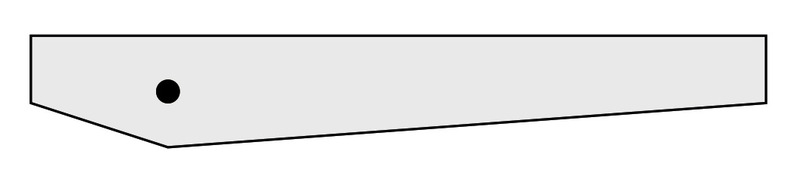

<div class="container">
  <div id="contents" class="col-md-12 main-content"><h1 xmlns="http://www.w3.org/1999/xhtml" id="toc-id-12">Simple mechanisms combined</h1>
    <p xmlns="http://www.w3.org/1999/xhtml" class="x--Body-opener"><span>In this chapter, you will learn
    how simple mechanisms can be combined to make complex machines
    that are useful. You will learn about a mechanism called a
    pulley, which is often part of a crane. Then you will learn how
    a crank handle can be used to make a winder. A crank and winder
    mechanism allows a rope to wind up easily</span>.</p>

    
<figure xmlns="http://www.w3.org/1999/xhtml">
    <p class="Body-opener para-style-override-29"><span></span> </p>
<figcaption>
    <p class="x--caption">Figure 1: Cranes use pulleys and
    levers.</p>
</figcaption></figure>
<figure xmlns="http://www.w3.org/1999/xhtml">
    <p class="Body-opener para-style-override-29"><span></span> </p>
<figcaption>
    <p class="x--caption">Figure 2</p>
</figcaption></figure>
    <h2 xmlns="http://www.w3.org/1999/xhtml" id="toc-id-13">Machines combine simple mechanisms</h2>

    <p xmlns="http://www.w3.org/1999/xhtml" class="x--Body-Text"><span>Do you remember what a mechanism
    is? Mechanisms are the parts that make up a</span> <span class="Body-bold char-style-override-4">machine</span> <span>.
    Machines are usually made of many simple mechanisms connected
    together</span>.</p>

    <p xmlns="http://www.w3.org/1999/xhtml" class="x--Body-indent"><span>Why are mechanisms useful? They
    help us to move things further, faster or more easily. We can
    put together simple mechanisms to design a machine that will
    give us mechanical advantage.</span></p>

    <p xmlns="http://www.w3.org/1999/xhtml" class="x--Body--above">Remember:</p>

    <div xmlns="http://www.w3.org/1999/xhtml" class="note">
      <ul><li class="x--Body-text-bullet"> 
         Mechanical advantage reduces the input or effort
        force so that loads are easier to move. </li>

        <li class="x--Body-text-bullet"> 
        <span>First-class levers have the fulcrum positioned
        between the effort and the load.</span></li>

        <li class="x--Body-text-bullet"> 
        <span>Second-class levers have the fulcrum positioned at
        one end of the lever and the effort at the other end. The
        load is always between the effort and the
        fulcrum.</span></li>

        <li class="x--Body-text-bullet">
        <span>Third-class levers have the fulcrum and the load
        positioned on opposite ends of the lever. The effort is in
        the middle</span>.</li>
      </ul></div>

    <p xmlns="http://www.w3.org/1999/xhtml" class="x--Body-indent"><span>Figure 3 on the opposite page
    shows a</span> <span>"</span><span>tower
    crane</span><span>". These cranes are used to help
    us build high buildings</span>.</p>

    <p xmlns="http://www.w3.org/1999/xhtml" class="x--Body-indent"><span>Tower cranes are tall, straight
    cranes that use ropes, pulleys and winches to help people to
    lift very heavy things, such as bricks and cement. They are
    made of simple mechanisms all working together</span>.</p>

    <p xmlns="http://www.w3.org/1999/xhtml" class="x--Body-indent"><span>Use the picture of the tower
    crane on the opposite page to answer the questions</span>.</p>

    <p xmlns="http://www.w3.org/1999/xhtml" class="x--Body-investigation-hanging">1. <span>What do you
    think the main purpose of the crane is</span>?</p>

     <hr xmlns="http://www.w3.org/1999/xhtml"/><p xmlns="http://www.w3.org/1999/xhtml" class="x--Body-investigation-hanging">2. <span>What do the
    pulleys do</span>?</p>

    <hr xmlns="http://www.w3.org/1999/xhtml"/><figure xmlns="http://www.w3.org/1999/xhtml"><p class="x--Body-investigation-hanging"><span></span> </p>
<figcaption>
    <p class="x--caption">Figure 3: <span>A tower crane uses many
    different mechanisms</span>.</p>
</figcaption></figure>
    <p xmlns="http://www.w3.org/1999/xhtml" class="x--Body-investigation-hanging">3. <span>The crane
    needs to lift heavy things from different places on the ground.
    How does the trolley help people to lift things from different
    places on the ground?</span></p>

     
    <hr xmlns="http://www.w3.org/1999/xhtml"/><p xmlns="http://www.w3.org/1999/xhtml" class="x--Body-investigation-hanging">4. <span>Why does the
    crane need to</span> <b><b>rotate</b>?</b></p><hr xmlns="http://www.w3.org/1999/xhtml"/>

    <div xmlns="http://www.w3.org/1999/xhtml" class="aside">
      <p class="x--Body-box-no-indent"><span class="char-style-override-1"><b>Rotate</b></span> means to turn around an
      axis or centre point.</p>
    </div>

     

    <p xmlns="http://www.w3.org/1999/xhtml" class="x--Body-investigation-hanging">5. <span>The jib has a
    fulcrum on top of the vertical column. It has an input force or
    effort from the diagonal cables right at the top of the crane
    pulling the jib up,</span> <span>and a load
    pulling the jib down. How do you know that the</span>
    <span class="char-style-override-4">jib</span> <span>is
    actually a lever?</span></p>
    <hr xmlns="http://www.w3.org/1999/xhtml"/><p xmlns="http://www.w3.org/1999/xhtml" class="x--Body-investigation-hanging-a- para-style-override-30">6.
    <span>Is the jib a first-class, second-class or third-class
    lever? How do you know?</span></p>

    
     
    <hr xmlns="http://www.w3.org/1999/xhtml"/><p xmlns="http://www.w3.org/1999/xhtml" class="x--Body-investigation-hanging">7. <span>What stops
    the crane from falling over when it lifts something?</span></p>
    <hr xmlns="http://www.w3.org/1999/xhtml"/><p xmlns="http://www.w3.org/1999/xhtml" class="x--Body-investigation-hanging">8. <span>Make a list
    of all of the mechanisms on this crane that help it to lift
    loads.</span></p>
    <hr xmlns="http://www.w3.org/1999/xhtml"/><p xmlns="http://www.w3.org/1999/xhtml" class="x--Body-investigation-hanging">9. <span>Now make a
    list of all the parts that hold the crane up, and keep it
    balanced, so that it can lift things safely.</span></p>

     <hr xmlns="http://www.w3.org/1999/xhtml"/>

    <h2 xmlns="http://www.w3.org/1999/xhtml" id="toc-id-14">Pulleys - mechanical advantage from ropes and cables</h2>

    <p xmlns="http://www.w3.org/1999/xhtml" class="x--Body-Text"><span>Look at Figure 4. A man is
    lifting a heavy bag. He is using a rope wrapped around a pulley
    so that he can pull down to lift the bag, instead of lifting
    the bag up. The pulley makes it possible for the rope to change
    the direction in which the rope pulls. When he pulls down on
    the rope, he can lean with his weight on the rope to make it
    easier to pull the bag up. But there is no mechanical advantage
    in this situation</span>.</p>

   <figure xmlns="http://www.w3.org/1999/xhtml"> <p class="x--caption"><span></span></p>
    <figcaption><p>Figure 4: <span>A man is
    using a rope and a pulley wheel to lift a heavy bag</span>.</p></figcaption></figure>

    <p xmlns="http://www.w3.org/1999/xhtml" class="x--Body-indent-1-3"><span>Look at Figure 5. A person
    uses two pulleys to lift a weight. One pulley wheel is
    connected to the roof. The second pulley wheel hangs on a loop
    of rope. The two pulleys and the way the rope is wrapped around
    both pulleys, forms a</span> <span class="Body-bold char-style-override-4">pulley system</span> <span>.
    The pulley system makes it easier to lift a load. Here is how
    it works:</span></p>

    <ul xmlns="http://www.w3.org/1999/xhtml"><li class="x--Body-text-bullet"> At
      the effort end, you pull on one piece of rope.</li>

      <li class="x--Body-text-bullet"> <span>Two
      pieces of rope lift the load.</span></li>

      <li class="x--Body-text-bullet">  <span>Two
      pulleys connected to a single piece of rope,</span> <span>as
      shown in Figure 5, give a mechanical advantage.</span></li>
    </ul><figure xmlns="http://www.w3.org/1999/xhtml">
      <div class="frame-4"></div>

      <figcaption>
        <p class="x--caption">Figure 5: <span>If you connect two
        pulleys to a piece of rope like this,</span> <span> you get a
        mechanical advantage</span>.</p>
      </figcaption>
    </figure>

    <h3 xmlns="http://www.w3.org/1999/xhtml">Make your own pulley system</h3>

    <p xmlns="http://www.w3.org/1999/xhtml" class="x--Body--above"><span class="Body-bold">You need the
    following things for this activity:</span></p>

    <ul xmlns="http://www.w3.org/1999/xhtml"><li class="x--Body-text-bullet">  <span>two
      plastic curtain sliders to
      act</span> <span> as</span> <span> pulleys,</span></li>

      <li class="x--Body-text-bullet">  <span>500
      mm of string or cotton,</span></li>

      <li class="x--Body-text-bullet">  <span>a
      few weights, like steel nuts </span> <span>or
      washers,</span></li>

      <li class="x--Body-text-bullet">  <span>a
      flat piece of
      corrugated</span> <span> cardboard,</span> <span> about A4
      sized,</span></li>

      <li class="x--Body-text-bullet"> 
      <span>paper clips, and</span></li>

      <li class="x--Body-text-bullet">
         
        <span>three pins.</span>
 </li>
    </ul>
        <figure xmlns="http://www.w3.org/1999/xhtml">
          <div class="frame-4"></div>

          <figcaption>
            <p class="x--caption">Figure 6: You can make a pulley
            system out of curtain sliders.</p>
          </figcaption>
        </figure>
     <p xmlns="http://www.w3.org/1999/xhtml" class="x--Body-indent"><span>Study the picture in Figure 6
    to help</span> <span>you make your own pulley
    system.</span> <span>The instructions
    are</span> <span>below</span> <span>.</span></p>

    <p xmlns="http://www.w3.org/1999/xhtml"><b><span class="Body-bold">Making your
    own pulley system</span></b></p>

    <ul xmlns="http://www.w3.org/1999/xhtml"><li class="x--Body-text-bullet">  <span>Use
      a pin to attach a
      curtain</span> <span>slider</span> <span> about 30 cm from the
      top</span> <span> of the</span> <span> corrugated card. This
      will</span> <span> be the</span> <span>fixed pulley.</span></li>

      <li class="x--Body-text-bullet">  <span>Make
      a hook from the third paper</span> <span> clip and attach it to
      the bottom</span> <span> hole of the other curtain
      slider.</span> <span> This will be the moving
      pulley.</span></li>

      <li class="x--Body-text-bullet">  <span>Use
      a pin to fix one end of the string to the cardboard somewhere
      close to the fixed pulley</span></li>

      <li class="x--Body-text-bullet"> 
      <span>Thread the string around the moving pulley, and then
      back up and over the fixed pulley.</span></li>

      <li class="x--Body-text-bullet"> 
      <span>Attach your load to the hook at the bottom.</span></li>

      <li class="x--Body-text-bullet">  <span>Hang
      the pulley board onto a wall, or lean it against a
      wall</span> <span>.</span></li>
    </ul><p xmlns="http://www.w3.org/1999/xhtml" class="x--Body-investigation-hanging">1. Pull the string
    downwards. What happens to the load?</p>
    <hr xmlns="http://www.w3.org/1999/xhtml"/><p xmlns="http://www.w3.org/1999/xhtml" class="x--Body-investigation-hanging">2. <span>How many
    parts of the string pull up the load on the output or load side
    of the system</span>?</p>
    <hr xmlns="http://www.w3.org/1999/xhtml"/><p xmlns="http://www.w3.org/1999/xhtml" class="x--Body-investigation-hanging">3. <span>How
    man</span> <span>y parts of string are pulled down on the input
    or effort side of</span> <span>the
    system</span> <span>?</span></p>
    <hr xmlns="http://www.w3.org/1999/xhtml"/><p xmlns="http://www.w3.org/1999/xhtml" class="x--Body-investigation-hanging">4. <span>Pull the end
    of the string at the input or effort side down by exactly 100
    mm. Then measure how far the load lifts up. Write your answer
    below</span>.</p>
    <hr xmlns="http://www.w3.org/1999/xhtml"/><p xmlns="http://www.w3.org/1999/xhtml" class="x--Body-investigation-hanging">5. <span>Try to lift
    the load without the pulley system. How does it compare to
    lifting the load with the pulley system? Does the pulley system
    make it easier</span>?</p>
    <hr xmlns="http://www.w3.org/1999/xhtml"/> 
    <h3 xmlns="http://www.w3.org/1999/xhtml">An even easier pulley system</h3>

    <p xmlns="http://www.w3.org/1999/xhtml" class="x--Body-text-1-3 para-style-override-32"><span>Do
    this activity for homework to add to your understanding of
    pulley systems. Add two more curtain sliders to your pulley
    system. Look at the picture below to help you. Test the system
    by lifting the same load as before</span>.</p>

    <figure xmlns="http://www.w3.org/1999/xhtml">
      <div class="frame-4"></div>

      <figcaption>
        <p class="x--caption">Figure 7: You will increase the
        mechanical advantage if you use more pulleys. There will be
        more lengths of string to lift the load.</p>
      </figcaption>
    </figure>

    <p xmlns="http://www.w3.org/1999/xhtml" class="x--Body-investigation-hanging">1. <span>What distance
    does the</span> <span>load lift when you pull</span> <span>the
    string down by 100 cm?</span></p>
    <hr xmlns="http://www.w3.org/1999/xhtml"/><p xmlns="http://www.w3.org/1999/xhtml" class="x--Body-investigation-hanging">2. <span>Describe what
    a pulley</span> <span>mechanism does.</span></p>

    
    <hr xmlns="http://www.w3.org/1999/xhtml"/><p xmlns="http://www.w3.org/1999/xhtml" class="x--Body-investigation-hanging">3. <span>What do you
    think pulley systems are mostly used for</span>?</p>
<hr xmlns="http://www.w3.org/1999/xhtml"/>
     
    <p xmlns="http://www.w3.org/1999/xhtml" class="x--Body-investigation-hanging">4. <span>Real pulley
    systems use wheels instead of curtain sliders. Why do you think
    this is?</span> <b>Hint:</b>
    <span>Think how you can make it easy to slide an object over a
    rough surface</span> <span>.</span></p>

   
    <hr xmlns="http://www.w3.org/1999/xhtml"/> 

    <h2 xmlns="http://www.w3.org/1999/xhtml" id="toc-id-15">Combining mechanisms</h2>

    <h3 xmlns="http://www.w3.org/1999/xhtml">Make a lifting system</h3>

    <p xmlns="http://www.w3.org/1999/xhtml" class="x--Body-Text"><span>In this activity, you will
    combine mechanisms to make a machine that can lift things.
    Remember that machines make it easier for us to move, lift,
    push or pull things</span> <span>.</span></p>

    <p xmlns="http://www.w3.org/1999/xhtml" class="x--Body-indent"><span>Look at the model of the
    lifting system shown in Figure 8. You will have a chance to
    make this lifting system in the activities that follow. But
    first answer the questions below</span>.</p>
<figure xmlns="http://www.w3.org/1999/xhtml">
    <p class="x--Body-Text"><span></span> </p>
<figcaption>
    <p class="x--caption">Figure 8: A lifting system that you can
    make</p>
</figcaption></figure>
    <p xmlns="http://www.w3.org/1999/xhtml" class="x--Body-investigation-hanging">1. How does the pulley
    system help to lift things?</p>

    
    <hr xmlns="http://www.w3.org/1999/xhtml"/><p xmlns="http://www.w3.org/1999/xhtml" class="x--Body-investigation-hanging">2. <span>What does the
    lever do in this system</span>?</p>
    <hr xmlns="http://www.w3.org/1999/xhtml"/><p xmlns="http://www.w3.org/1999/xhtml" class="x--Body-investigation-hanging">3. <span>Explain how
    you could use this system to lift a load</span>?</p>

     <hr xmlns="http://www.w3.org/1999/xhtml"/> 
    <h3 xmlns="http://www.w3.org/1999/xhtml">Make an a-frame for a fulcrum</h3>

    <p xmlns="http://www.w3.org/1999/xhtml" class="x--Body-Text"><span>Trace the shapes in Figure 9
    below. Then cut out the shapes and paste them onto a piece of
    corrugated cardboard. Cut out the cardboard shapes</span>.</p>
<figure xmlns="http://www.w3.org/1999/xhtml">
    <p class="x--Body-investigation-hanging"><span></span> </p>
<figcaption>
    <p class="x--caption">Figure 9: Use these four shapes to make
    an A-frame.</p>
</figcaption></figure>
    <ul xmlns="http://www.w3.org/1999/xhtml"><li class="x--Body-text-bullet">  Use these
      shapes to make two A-frames.</li>

      <li class="x--Body-text-bullet">  Glue two
      shapes together at the top.</li>

      <li class="x--Body-text-bullet">  Add parcel
      tape to the bottom to make the A shape.</li>
    </ul><p xmlns="http://www.w3.org/1999/xhtml" class="x--Body--above">Look at Figure 10 to see how to do
    this.</p>

    <figure xmlns="http://www.w3.org/1999/xhtml">
      <div class="frame-4"></div>

      <figcaption>
       <p class="x--caption">Figure 10: How to make an A-frame</p>
      </figcaption></figure>


    

    
    <h3 xmlns="http://www.w3.org/1999/xhtml">Make a hand-driven winch</h3>

    <p xmlns="http://www.w3.org/1999/xhtml" class="x--Body-Text"><span>A winch is a mechanism that is
    the combination of:</span></p>

    <ul xmlns="http://www.w3.org/1999/xhtml"><li class="x--Body-text-bullet"> 
      <span>a</span> <b>winch drum</b>
      <span>that is a cylinder around which rope or cable is rolled
      up,</span></li>

      <li class="x--Body-text-bullet"> 
      <span>an</span> <b>axle</b>
      <span>that allows the drum to rotate, and</span></li>

      <li class="x--Body-text-bullet"> 
      <span>a</span> <b>crank</b>
      <span>that is a lever or</span>
      <span>"</span> <span>arm</span> <span>"</span> <span>with which
      the drum is turned.</span></li>
    </ul><p xmlns="http://www.w3.org/1999/xhtml" class="x--Body--above"><b>You need the
    following things for this activity:</b></p>

    <ul xmlns="http://www.w3.org/1999/xhtml"><li class="x--Body-text-bullet">  two
      milk-bottle tops,</li>

      <li class="x--Body-text-bullet">  sticky
      tape,</li>

      <li class="x--Body-text-bullet">  a long
      nail,</li>

      <li class="x--Body-text-bullet">  stiff
      cardboard 15 mm wide and 40 mm long, and</li>

      <li class="x--Body-text-bullet">  a small
      nail.</li>
    </ul><figure xmlns="http://www.w3.org/1999/xhtml"><p class="x--Body-Text para-style-override-33">
    <span></span> </p>
<figcaption>
    <p class="x--caption">Figure 11: <span>You can make a
    hand-driven winch drum by joining two milk-bottle tops
    together.</span></p></figcaption></figure>

    <ul xmlns="http://www.w3.org/1999/xhtml"><li class="x--Body-text-bullet"> <span>Tape
      the two milk-bottle</span> <span>tops together.</span></li>

      <li class="x--Body-text-bullet"> <span>Make
      two small holes in the centres of the bottle tops. The</span>
      <b>axle</b> <span>of your winch will
      go through these holes.</span></li>

      <li class="x--Body-text-bullet">  <span>Cut
      a piece of stiff cardboard for your crank.</span> <span>It
      should be about 15 mm wide and 40 mm long.</span></li>

      <li class="x--Body-text-bullet">
         
        <span>Push the long nail through one side of the
        crank.</span> <span>Then push the nail through the centre of
        the drum,</span> <span>and out through the other side of the
        drum.</span>

        <div class="aside">
          <p class="x--Body-box-no-indent"><span>An</span>
          <span class="char-style-override-1"><b>axle</b></span> <span>is
          the straight bar around which something like a wheel or a
          winch drum rotates. In other words: it is the fulcrum
          around which something turns.</span></p>
        </div>
      </li>
    </ul><p xmlns="http://www.w3.org/1999/xhtml" class="x--Body-indent"><b>Note:</b>
    <span>The crank lever and the drum must fit tightly onto the
    nail. When the crank turns, the drum should also
    turn</span>.</p>

    <ul xmlns="http://www.w3.org/1999/xhtml"><li class="x--Body-text-bullet"> <span>Make
      a crank handle by pushing a smaller nail through the other
      side of the crank lever</span>.</li>
    </ul> <p xmlns="http://www.w3.org/1999/xhtml"><b>Attach the winch to the A
    frame</b></p>

    <ul xmlns="http://www.w3.org/1999/xhtml"><li class="x--Body-text-bullet">  <span>Make
      a hole through each of the two A frames, in the one</span>
      <span>"</span> <span>leg</span> <span>"</span> <span>of the A
      frame, about 45 mm from the base.</span></li>
    </ul><figure xmlns="http://www.w3.org/1999/xhtml"><p class="x--caption"><span></span> </p>
<figcaption>
    <p class="x--caption para-style-override-10">Figure 12:
    <span>Put your crank and winder into your A frame.</span></p>
</figcaption></figure>
    <ul xmlns="http://www.w3.org/1999/xhtml"><li class="x--Body-text-bullet">
      <span>Carefully take the winch apart and set the drum aside.
      Then push the axle with the crank attached to it through the
      hole on the A frame at the front.</span></li>

      <li class="x--Body-text-bullet">  <span>Put
      the drum between the A frames at the front and the back, and
      then push the axle through the drum again</span>.</li>

      <li class="x--Body-text-bullet"> <span>Keep
      pushing the axle until it goes through the hole in the
      A-frame at the back</span>.</li>
    </ul><p xmlns="http://www.w3.org/1999/xhtml" class="x--Body-investigation-hanging">1. What does the
    hand-driven winch do?</p>
    <hr xmlns="http://www.w3.org/1999/xhtml"/> 
    <h3 xmlns="http://www.w3.org/1999/xhtml">Make a lifting lever</h3>

    <p xmlns="http://www.w3.org/1999/xhtml" class="x--Body-Text para-style-override-9"><span>Now trace
    this shape and use it to make a corrugated cardboard lifting
    lever, exactly the same size as the one below in Figure
    13</span>.</p>
<figure xmlns="http://www.w3.org/1999/xhtml">
    <p class="x--Body-Text"><span></span> </p>
<figcaption>
    <p class="x--caption">Figure 13: You can use this shape to make
    a lifting lever.</p>
</figcaption></figure>
    <p xmlns="http://www.w3.org/1999/xhtml"><b><span class="Body-bold">Follow these
    steps:</span></b></p>

    <ul xmlns="http://www.w3.org/1999/xhtml"><li class="x--Body-text-bullet">  <span>Make
      a hole in both A frames, about 10 mm down from the
      top.</span></li>

      <li class="x--Body-text-bullet">  <span>Make
      a hole on the lifting lever, 10 mm up from the bottom of the
      V-shape.</span></li>

      <li class="x--Body-text-bullet"> <span>Use
      a nail as the fulcrum and join the lifting lever to the two A
      frames to make a second-class lever.</span></li>

      <li class="x--Body-text-bullet"> <span>Push
      another nail through the right legs of the A frames to hold
      the lever up. Look at Figure 14 to help you</span>.</li>
    </ul><figure xmlns="http://www.w3.org/1999/xhtml"><p class="x--caption"><span></span> </p>
<figcaption>
    <p class="x--caption">Figure 14: <span>How to connect your
    lifting lever to your A frames</span></p></figcaption>
</figure>
    
    <h3 xmlns="http://www.w3.org/1999/xhtml">Add a pulley system</h3>

    <p xmlns="http://www.w3.org/1999/xhtml" class="x--Body-investigation-hanging">Follow this
    method:</p>

    <ul xmlns="http://www.w3.org/1999/xhtml"><li class="x--Body-text-bullet"> <span>Pin
      two curtain sliders onto your lifting
      lever</span> <span>,</span> <span>one on the right and another
      one on the left. These sliders will guide your lifting
      rope.</span></li>

      <li class="x--Body-text-bullet"> <span>Add
      a pin, or make a hole on the right-hand side of the lifting
      lever. Tie a piece of cotton thread or thin string to the
      pin, or make a knot through the hole.</span></li>

      <li class="x--Body-text-bullet"> <span>Make
      a hook from a paper clip and hook it onto another curtain
      slider.</span></li>

      <li class="x--Body-text-bullet"> 
      <span>Thread the string around the pulley with the hook on,
      over the pulley on the right side of the lifting lever, and
      then over the pulley of</span> <span>left side of the lifting
      lever.</span></li>

      <li class="x--Body-text-bullet"> <span>Pull
      the loose end of the string down to the winch, and wrap it
      around the drum a few times. Then stick it onto the
      drum.</span></li>

      <li class="x--Body-text-bullet"> <span>Turn
      the crank until the hook hangs in the air.</span></li>
    </ul><p xmlns="http://www.w3.org/1999/xhtml" class="x--Body--above">Look at Figure 15 to help you, and
    answer the questions.</p>
<figure xmlns="http://www.w3.org/1999/xhtml">
    <p class="x--caption"><span></span> </p>
<figcaption>
    <p class="x--caption">Figure 15: Add a pulley system to your
    lifting lever.</p>
</figcaption></figure>
    <p xmlns="http://www.w3.org/1999/xhtml"><b>Questions</b></p>

    <p xmlns="http://www.w3.org/1999/xhtml" class="x--Body-investigation-hanging">1. <span>How do you
    use this system to lift things</span>?</p>

   <hr xmlns="http://www.w3.org/1999/xhtml"/>

    <p xmlns="http://www.w3.org/1999/xhtml" class="x--Body-investigation-hanging">2. <span>What shape do
    you think makes the A frames on this system strong?</span></p>

    
    <hr xmlns="http://www.w3.org/1999/xhtml"/><p xmlns="http://www.w3.org/1999/xhtml" class="x--Body-investigation-hanging">3. <span>As it is at
    the moment, the lifting lever of your model crane does not
    move. Could you change or add something so that you can make
    the lifting lever move up and down? Explain how you could do
    this.</span> <b>Hint:</b> <span>You can
    have two winches on a crane</span>.</p>


    <hr xmlns="http://www.w3.org/1999/xhtml"/> <p xmlns="http://www.w3.org/1999/xhtml" class="x--Body-investigation-hanging">4. <span>Name the
    mechanisms that have been combined to make this
    system.</span></p>
    <hr xmlns="http://www.w3.org/1999/xhtml"/><p xmlns="http://www.w3.org/1999/xhtml" class="x--Body-investigation-hanging--1-3-">5. <span>Does
    the winch give you a mechanical advantage? Explain your
    answer.</span></p><hr xmlns="http://www.w3.org/1999/xhtml"/>

    <div xmlns="http://www.w3.org/1999/xhtml" class="aside">
      <p class="x--Body-box-no-indent"><span class="char-style-override-1"><b>Remember</b></span> <span>: A mechanical
      advantage makes the output force (on the load) bigger than
      the input force (effort).</span></p>

      <p class="x--Body-box-no-indent">A distance advantage makes
      the load move further than the effort moves.</p>
    </div>

  <p xmlns="http://www.w3.org/1999/xhtml" class="x--Body-investigation-hanging">6. <span>Does the
    pulley system give you a distance</span> <span>advantage?
    Explain your answer</span>.</p>

    
    <hr xmlns="http://www.w3.org/1999/xhtml"/> 
    <h3 xmlns="http://www.w3.org/1999/xhtml">What have you learnt?</h3>

    <p xmlns="http://www.w3.org/1999/xhtml" class="x--Body-investigation-hanging">1. <span>Which
    mechanisms can you combine to make a crane? Explain your
    answer</span>.</p>

    
    <hr xmlns="http://www.w3.org/1999/xhtml"/><p xmlns="http://www.w3.org/1999/xhtml" class="x--Body-investigation-hanging">2. <span>Give an
    example of a machine that uses a crank</span>.</p>
    <hr xmlns="http://www.w3.org/1999/xhtml"/><p xmlns="http://www.w3.org/1999/xhtml" class="x--Body-investigation-hanging">3. <span>Give an
    example of a machine that uses pulleys</span>.</p>
    <hr xmlns="http://www.w3.org/1999/xhtml"/><p xmlns="http://www.w3.org/1999/xhtml" class="x--Body-investigation-hanging">4. <span>How does a
    pulley system give a mechanical advantage</span>?</p>


    <hr xmlns="http://www.w3.org/1999/xhtml"/> 
    <h3 xmlns="http://www.w3.org/1999/xhtml">Next week</h3>

    <p xmlns="http://www.w3.org/1999/xhtml" class="x--Body-Text"><span>Next week, you will start your
    mini-PAT for Term 3. You will design and make a machine to help
    a scrap-metal dealer sort the magnetic from the non-magnetic
    metals in the scrap yard</span>.</p>

    
    
    
  </div>
</div>